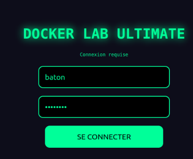
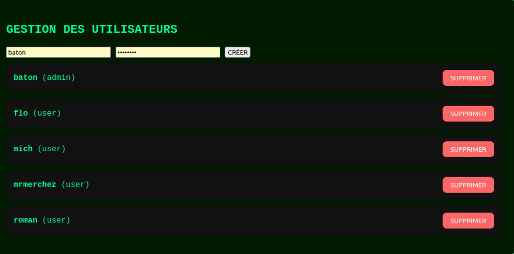
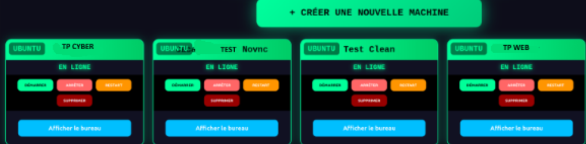

Projet 1 – SAE 501 : Infrastructure TP Conteneurisée
SAE 501 – Mise en place d’une infrastructure de TP basée sur des conteneurs.
L’objectif du projet était de créer une plateforme permettant de déployer automatiquement des environnements de Travaux Pratiques accessibles via un navigateur web. Nous avons conçu une infrastructure complète utilisant Docker, Flask, MySQL et une interface en noVNC pour permettre aux étudiants de créer, démarrer, arrêter ou supprimer leurs machines virtuelles.
Ce que j’ai réalisé :
- Mise en place d’un orchestrateur de conteneurs pour gérer plusieurs environnements.
- Création d’images de conteneurs (Ubuntu, Kali Linux, Windows).
- Développement d’une interface web en Flask + HTML/CSS/JS.
- Système d’authentification sécurisé (mots de passe hachés, rôles admin/user).
- Gestion dynamique des conteneurs Docker (création, démarrage, suppression).
- Monitoring via logs utilisateur et supervision complète avec Portainer.
Fonctionnalités techniques :
- Déploiement instantané de machines virtuelles via Docker.
- Accès au bureau via navigateur grâce à noVNC.
- Isolation complète des conteneurs.
- Supervision système : CPU, RAM, nombre de conteneurs.
Captures d’écran :
   Télécharger le rapport
Projet 2 – À compléter
Description…
Projet 3 – À compléter
Description…
Projet 1 – À compléter
Description…